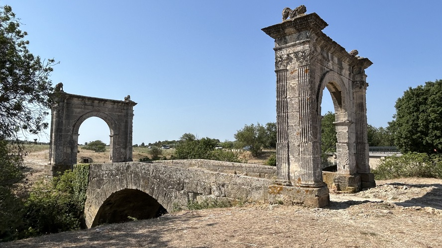
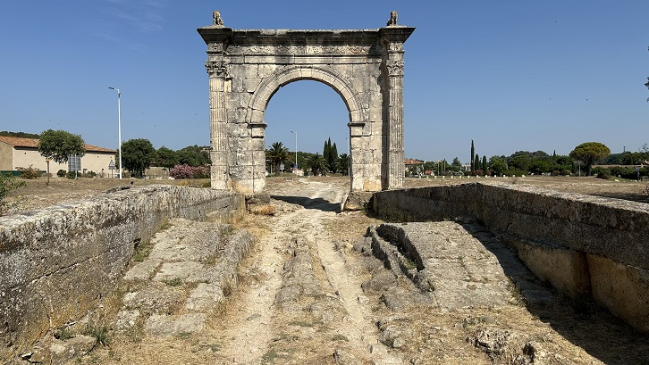

|
El Puente Flaviano El puente Flaviano fue construido en el año 10 a.e.c. por encargo de Lucio Donnius Flavus por testamento, en la vía romana que conectaba Marsella con Arlés, en la prolongación de la vía Aurelia. Se extiende sobre el río Touloubre, con un arco central y dos entradas monumentales en cada extremo. Mide 22m de largo y 6m de ancho. Las inscripciones latinas en los arcos del puente documentan su construcción y rinden homenaje a los responsables de supervisar esta obra. Los dos arcos triunfales idénticos marcan las entradas del puente, convirtiéndolo en el único puente romano en Francia con portales decorativos conservados.
 Inscripción: "C. DONNIVS. C. F. FLAVOS FLAMEN. ROMAE ET. AVGVSTI. TESTAMENTO. FIEREI. IVSSIT. ARBITRATV. C DONNEI, VENAE. ET. C. ATTEI. RVFEI." El desgaste de las dovelas de la bóveda del arco es brutal.
 Como única vía pública, se utilizó intensamente durante casi 20 siglos. Al desaparecer el antiguo pavimento, los vehículos comenzaron a circular sobre el propio arco, creando surcos que aún son visibles. En el siglo XVIII, con un deterioro crítico y al borde del colapso, fue restaurado. En 1944 el arco norte fue dañado por un camión estadounidense, fue desmantelado y junto a él se construyó un puente temporal, conocido como el "Puente Americano". Este puente permaneció en uso hasta la construcción del actual puente de carretera en 1955.
|